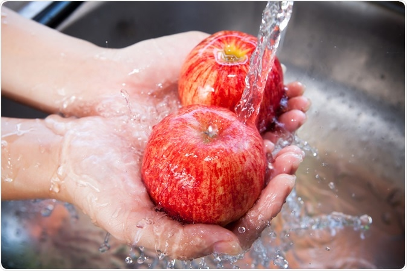
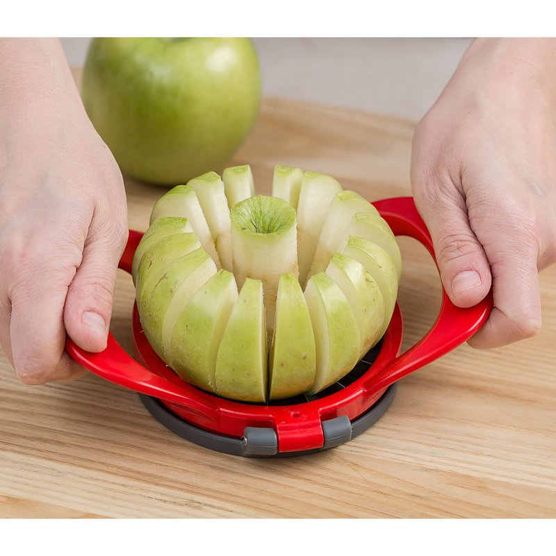
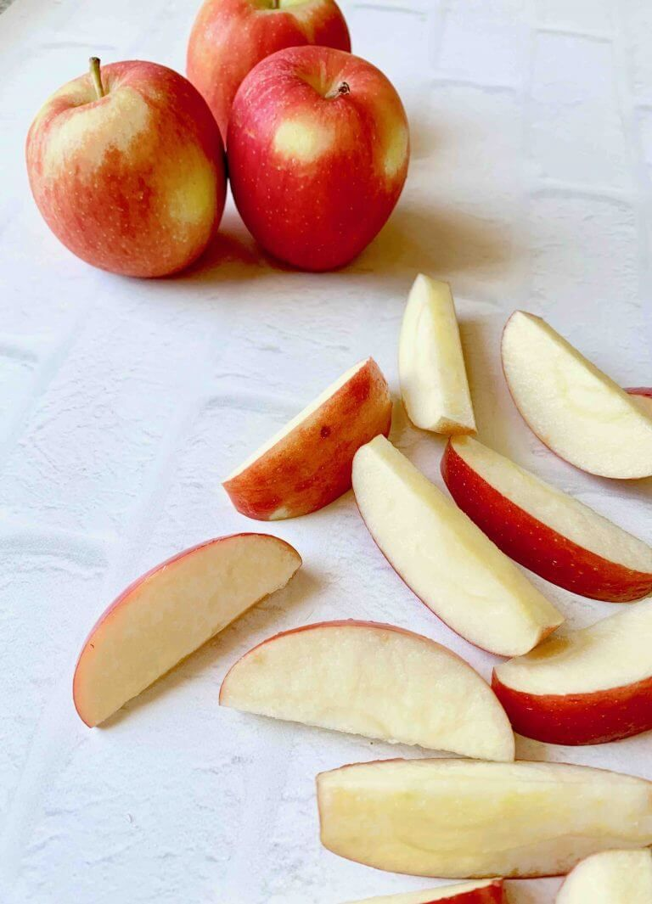

The first step is to wash your apples in clean water, and make sure you get any dirt off.
Next, you place your apple slicer on top of the apple, with the circular hole in the middle where the stem is.
Simply push down and slice right through the apple.
Now you have a perfectly sliced apple, perfect with peanut butter!
